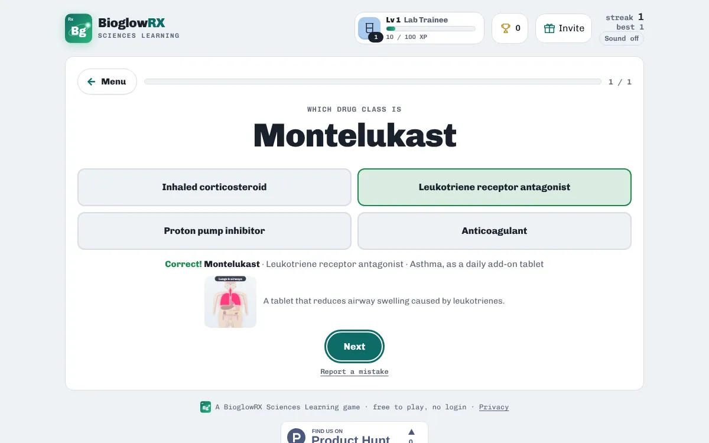

Pharmacology · free · no login
Nursing pharmacology: drug classes quiz

Knowing the drug class is the shortcut in pharmacology: medicines in the same class work the same way, so the class tells you what a drug treats and its classic side effects. Many generic names even carry a family ending, such as -pril, -sartan, -olol, -statin and -prazole.

Drug Class Sort covers 25 common medicines across the heart and blood vessels, breathing and allergy, digestion, brain and nerves, and hormones and diabetes.
A taste of what's inside
| Medicine | Class | Main use |
|---|---|---|
| Lisinopril | ACE inhibitor | High blood pressure and heart failure |
| Losartan | ARB (angiotensin receptor blocker) | High blood pressure, often when ACE inhibitors cause a cough |
| Amlodipine | Calcium channel blocker | High blood pressure and angina |
| Metoprolol | Beta blocker | Fast heart rate and high blood pressure |
| Atorvastatin | Statin | High cholesterol |
| Furosemide | Loop diuretic | Fluid build-up and heart failure |
| Hydrochlorothiazide | Thiazide diuretic | Mild high blood pressure, often added to other tablets |
| Warfarin | Anticoagulant | Preventing blood clots |
| Albuterol (salbutamol) | Short-acting bronchodilator | Quick relief of asthma attacks |
| Fluticasone | Inhaled corticosteroid | Preventing asthma attacks (inhaled preventer) |
Ways to practise
- Study notes · Read the key ideas first: everything the games ask is in here.
- Explore medicines · Tap a medicine to see its class and what it treats.
- Which body system? · Sort each medicine by the system it treats.
- Name the class · See the medicine, pick its drug class.
- What is it for? · See the medicine, pick what it treats.
- Match Pairs · Pair each medicine with its class.
How to study with it
- Open Explore medicines and look for the name endings.
- Play Name the class and What is it for?.
- Then sort by Which body system? and finish with Match Pairs.
Questions
Which drug names does it use?
US generic names, matching the Open RN Nursing Pharmacology textbook.
Is it free?
Yes. Everything is free, with no ads and nothing to buy.
Do I need an account?
No. There is no login. Your scores, streaks and certificates are saved on your device.
Does it work on a phone?
Yes. It works in any modern browser on phones, tablets, Chromebooks and computers.
More free practice
 PharmacologyFree dosage calculation practiceTablets, liquids, mg/kg and IV rates with worked answersPlay free
PharmacologyFree dosage calculation practiceTablets, liquids, mg/kg and IV rates with worked answersPlay free  Anatomy & PhysiologyABG practice: blood gas casesRead pH, CO₂ and bicarbonate in patient casesPlay free
Anatomy & PhysiologyABG practice: blood gas casesRead pH, CO₂ and bicarbonate in patient casesPlay free  NutritionVitamins and minerals quizWhat each does, where to find it, what happens without itPlay free
NutritionVitamins and minerals quizWhat each does, where to find it, what happens without itPlay free BioglowRX Sciences Learning turns university science textbooks into free games, chapter by chapter: chemistry, anatomy & physiology, pharmacology, nutrition, and health & wellness. See all subjects.